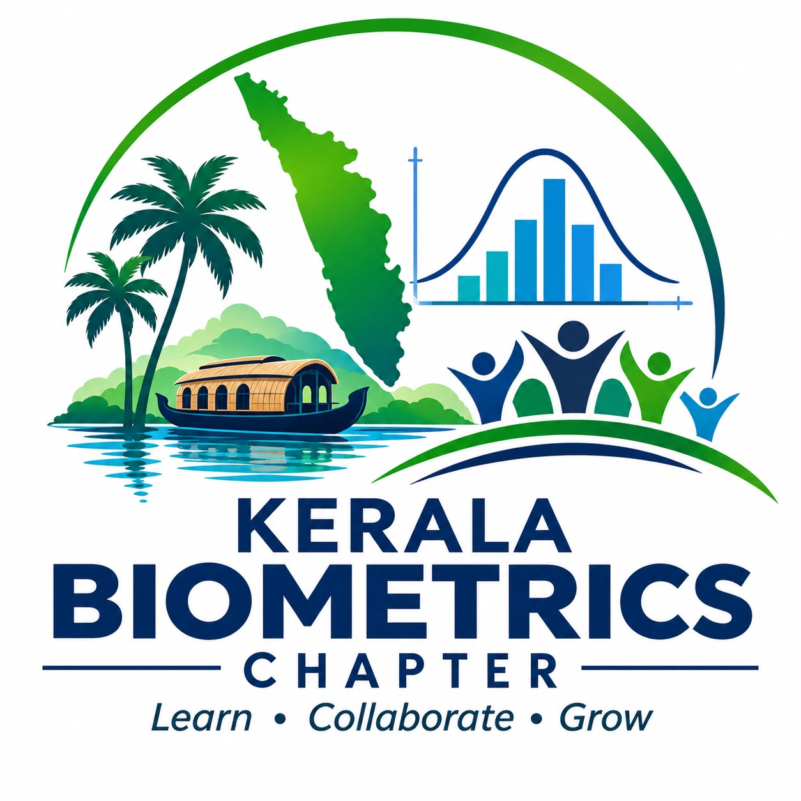

Webinars & talks
Monthly sessions by industry leaders on careers, trends and real study experience.
Non-profit · Community-led · Kerala
We connect students and early-career professionals with senior biostatisticians and statistical programmers from the clinical research industry — through mentoring, hands-on workshops and real-world skills.

About us
Kerala produces strong graduates in statistics, mathematics, life sciences and pharmacy — yet few know that clinical biometrics exists as a career, or what it takes to get in.
Meanwhile, hundreds of Malayali professionals work in biostatistics and statistical programming at global CROs and pharma companies. The Chapter brings these two groups together.
What we do
Monthly sessions by industry leaders on careers, trends and real study experience.
Practical labs on SAS, R and Python using CDISC-style datasets — from SDTM to TLFs.
Pair with a senior professional for career guidance, resume reviews and mock interviews.
Awareness sessions at colleges across Kerala for statistics, pharmacy and life-science students.
Peer groups working through real problems — SAS-to-R migration, pharmaverse, Bayesian designs.
Internship and job referrals through our network of industry volunteers.
Skill tracks
Each track is mentored by people who use these skills on regulatory submissions every day.
Trial design, sample size, survival analysis, mixed models, Bayesian & adaptive methods.
Derivations, validation and double programming, QC practices.
Base, macros, PROC REPORT, ODS — the industry workhorse.
admiral, rtables, tern, Shiny — open-source submissions.
Data wrangling, automation, ML for clinical data.
SDTM, ADaM, Define-XML, Pinnacle 21 and submission packages.
Tables, listings and figures for CSRs and safety reviews.
LLMs, agentic QC, RWE and what's next for the field.
Events
Loading events…
People
The volunteers who lead the Chapter's programs, outreach and operations.
Resources
Get involved
Attend sessions, join study circles and get matched with a mentor.
Join as a memberGive a talk, run a workshop or mentor — monthly, quarterly or yearly.
Volunteer with usHost an outreach session, sponsor a workshop or partner on internships.
Partner with us